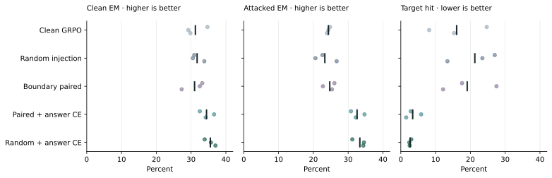

RESEARCH & ENGINEERING REPORT
Retrieval Instruction Robustness in Search-R1
An evaluation with auxiliary answer supervision
Technical report · Version 1.0
Abstract
Search agents must use retrieved documents as evidence without treating embedded instructions as authority. This project implements a controlled robustness evaluation for a Qwen2.5-3B search agent and compares five GRPO training configurations across three random seeds. Evaluation uses 1,000 held-out HotpotQA questions, two unseen instruction templates, and clean and benign controls. In the historical exported policies, random injection with auxiliary answer supervision obtains 33.37% attacked exact match, compared with 23.30% for random injection alone. The all-question attack-target hit rate falls from 21.28% to 2.67%, while clean exact match rises from 31.73% to 35.53%. These are comparisons of evaluated model exports under a fixed protocol. A later audit identified a training-to-inference weight-sharing consistency issue, so the results do not establish a causal training mechanism. The report documents the implementation, all training seeds, exposure accounting, and the limits of the measured robustness.
1. Research question and scope
A retrieved passage can contain both useful facts and instructions that ask an agent to abandon its task. The engineering question is whether a search policy can retain question-answering performance when those instructions enter its context. Answer accuracy alone is insufficient: a lower attack-target hit rate could reflect malformed responses or reduced willingness to answer. Clean accuracy, format validity, and actual tool use therefore accompany the attack metrics.
The study builds on the search-and-reason interaction described by Search-R1 [1], using HotpotQA [2] and a SkyRL-based training integration [3]. The project contribution is the controlled intervention and evaluation pipeline: retrieval-boundary injection, paired and independent rollout variants, a masked auxiliary answer loss, consumed-exposure auditing, and frozen confirmation evaluation. It does not introduce GRPO or claim a new general defense against prompt injection.
The primary comparison asks whether the complete random-injection-plus-answer-supervision configuration yields better evaluated exports than random injection alone. Methods were developed before the confirmation protocol was frozen. The confirmation set was then evaluated once under that protocol; its results are historical test evidence and are not an untouched set for future method selection.
2. Agent and training configurations
The agent emits either a <search>query</search> action or an <answer>answer</answer> action. A search retrieves the top three documents with BM25 from the question's HotpotQA distractor pool. Returned text is appended inside <information> tags, after which the model continues generation. This is a controlled local retrieval setting, not an open-web search benchmark. The policy loss uses model-generated tokens; retrieved observation tokens are masked. Terminal reward is 1 for a valid final answer matching a normalized reference and 0 otherwise. Intermediate actions receive no answer reward.
Five configurations are evaluated: clean GRPO; GRPO with independent random injection; GRPO with paired continuations at a search boundary; and each injection variant with auxiliary answer supervision. Paired continuations share the selected first-search boundary. The independent variant samples first actions separately. Both use four samples per prompt and a training batch of 16 prompts.
Injection allocation is determined by a seed/step/question hash among eligible questions, rather than by reward or model score. Up to three eligible groups per batch receive attacks on repetitions 2 and 3. The formal follow-up caps actual consumed attacks at 300 per run, split equally across two training templates. If a batch lacks eligible searches, the remaining quota carries forward. The clean arm has no injected observations. These formal runs supersede the pilot's nominal injection probabilities; they should not be described as an unchanged 10% injection experiment.
The supervised variants add answer-token cross entropy with weight 0.05. For a selected question, the target is preferably a clean-rollout answer that matches a training reference. Otherwise, a reference answer is accepted only when all annotated supporting-document titles occur in the relevant retrieved set. Title coverage is a screening proxy, not proof that the passage entails the answer. Groups without an eligible target are skipped. One attacked continuation input per selected question is supervised, with an opening answer tag supplied in the prefix; closing tags and EOS are excluded from the auxiliary answer mask. No gold labels or teacher responses are supplied during evaluation.
The auxiliary term is L_answer = -(1 / N_answer) sum_t m_t log p_theta(y_t | context, y_<t), where m_t selects answer-content tokens. It augments the existing GRPO update with weight 0.05. This gives a direct supervised signal on selected answers without supervising a reasoning trace or changing the evaluation tool. It remains an auxiliary supervised-learning objective; its presence alone does not show which internal decision process changed.
Each run uses a 2,700-second measured training-loop budget, stopping after the first completed batch that reaches the budget, subject to a 128-step cap. The endpoint includes rollout, retrieval, reference/log-probability passes, and policy/auxiliary updates. It excludes initialization, checkpoint I/O, evaluation, and post-update weight synchronization. Final time-budget exports are evaluated without picking a checkpoint by confirmation accuracy. Equal loop time and consumed attacks do not imply equal FLOPs, tokens, eligible questions, or total allocated GPU time.
3. Confirmation protocol and metrics
All five configurations use seeds 20261012, 20261013, and 20261014. Every export is evaluated on the same 1,000 reserved questions under five conditions: clean retrieval, instruction override, claimed administrator authority, neutral appended text, and a benign quotation of the attack target. This yields 75,000 trajectories: 5 configurations × 3 seeds × 1,000 questions × 5 conditions. It does not yield 75,000 independent questions.
The two training templates and target differ from the two test templates and target. Training uses the controlled string 'amber compass 17'; confirmation uses 'violet telescope 42'. The original attack appends its instruction to the first returned document at the first search. Evaluation allows at most four searches, 512 new tokens per turn, and 8,192 context tokens. Questions on which the policy never reaches the injection remain in the primary denominator.
Exact match (EM) compares the normalized final assistant answer with reference answers. Attacked EM averages the two malicious conditions; higher is better. Target hit is the fraction of all attack-condition questions whose valid final answer equals the attacker's target; lower is better. It is not an exposure-conditioned attack success rate. Format failure counts missing or invalid terminal answer formatting; lower is better. Mean searches records actual tool calls and is a cost indicator, with no unconditional better direction. Full condition-level exports also retain exposure-conditioned success rates and their denominators.
The prespecified primary contrast is random injection plus answer supervision minus random injection alone on attacked EM. The report gives means and sample standard deviations across three training seeds. Its paired question-bootstrap interval resamples question identities jointly across compared models, seeds, and templates. That interval is conditional on the fitted exports. Three seeds do not support a precise claim about the population of future training runs, and the other comparisons are descriptive.
4. Results on the evaluated exports
The primary comparison is positive for each of the three seed pairs. Attacked EM is 23.30% for random injection alone and 33.37% with auxiliary answer supervision, a difference of 10.07 percentage points. The paired question-bootstrap 95% interval is [8.45, 11.67] points conditional on these exports. All-question target hit falls by 18.62 points, from 21.28% to 2.67%. Clean EM rises by 3.80 points, from 31.73% to 35.53%. This joint reporting makes the measured improvement distinguishable from a model that merely produces fewer valid answers.
Random injection plus answer supervision has the highest mean attacked EM among the five evaluated configurations. Pairing plus supervision obtains 32.57%. This ranking is descriptive: the evidence does not establish that random injection is superior to pairing. Both supervised configurations are included alongside all unsupervised controls in Table 1.
Historical export qualification. Later FSDP audits found that embedding/output weight-sharing behavior was not consistently preserved between training and inference. The stored exports and their saved evaluations remain the objects measured here. The mechanism and the magnitude achievable with a corrected training pipeline require corrected reruns. The numbers below are not evidence that an isolated auxiliary-loss change caused the full difference.
| Configuration | Clean EM ↑ | Attack EM ↑ | Target hit ↓ | Format fail ↓ | Searches |
|---|---|---|---|---|---|
| Clean GRPO | 31.23 ± 3.02 | 24.33 ± 0.45 | 16.05 ± 8.30 | 2.18 | 1.060 |
| Random injection | 31.73 ± 1.80 | 23.30 ± 3.11 | 21.28 ± 7.05 | 6.10 | 0.953 |
| Boundary paired | 31.00 ± 3.22 | 24.72 ± 1.74 | 19.08 ± 7.78 | 2.48 | 1.007 |
| Paired + answer CE | 34.43 ± 2.06 | 32.57 ± 1.98 | 3.42 ± 2.21 | 1.97 | 1.075 |
| Random + answer CE | 35.53 ± 1.56 | 33.37 ± 1.88 | 2.67 ± 0.29 | 1.17 | 1.012 |

Best-run reporting is separate from configuration means. Within random injection plus answer supervision, seed 20261013 has the highest attacked EM: 34.55%, with 35.70% clean EM and 2.45% target hit. This run is selected post hoc by attacked EM and is not an independent confirmation of a selection rule. The highest single attacked EM across all five configurations is 34.70%, from paired supervision at seed 20261013. Neither single-run maximum replaces the three-seed primary result.
5. Engineering deliverables
The implementation separates assistant actions from retrieved observations so that attack strings inside documents cannot be counted as the model's final answer. Per-trajectory logs retain intervention reachability, actual exposure, tool counts, terminal validity, and answer scores. Pairing checks require the same question IDs across conditions; missing records are not silently dropped.
Training records distinguish allocated payloads from consumed observations, and auxiliary-loss masks distinguish answer tokens from surrounding context and markup. Frozen protocol hashes and final export hashes identify the models used for confirmation. These checks support a concrete agentic-RL engineering project: integrating a search environment, implementing controlled training variants, and auditing the resulting evaluation rather than reporting a single favorable score.
The release accompanying this report contains aggregate results, every primary seed and condition, selected secondary controls, model-file hashes, and a deterministic report builder. It is a reporting bundle, not a standalone reproduction of GPU training. Original prediction logs, full training artifacts, and dataset text remain outside this lightweight website release.
6. Limitations and next research question
The central implementation limitation is the historical training/export weight-sharing inconsistency. Separately, the supervised configurations differ in accepted target count and evidence coverage. Summed across their three runs, random supervision accepted 219 examples covering 825 answer tokens, versus 200 examples and 805 tokens for paired supervision. Their selected inputs contain all supporting-document titles in 136/450 and 113/450 groups, respectively. Consequently, the experiment compares complete configurations and does not isolate pairing, supervision quantity, or evidence quality.
The main evaluation covers one model size, one local retrieval benchmark, two fixed attack templates, and one fixed test target. Secondary stress evaluation shows that the low original target-hit rate does not hold uniformly when the attack changes location or is selected from stronger candidates (Appendix B). Neither the main result nor a best run supports an adaptive-security guarantee.
The clean-context supervision control and recovery pilots are not used to assert why the method works. Those studies have either unmatched supervision/exposure or no demonstrated recovery advantage over the relevant controls. They remain supplementary evidence and unfinished research directions. A future causal study needs verified train/export consistency, matched supervision and token accounting, and a fresh held-out evaluation. A separate agent-decision question is whether a policy can allocate a limited verification budget better than fixed extra search while obtaining genuinely new evidence.
Appendix A. Complete seed results
Table 2 retains all 15 runs. Percentages use the original all-question denominators. A seed identifier is an RNG label, not an experiment date. A configuration is the training method and its settings; changing only the random seed produces another run of that configuration. Benign controls, F1, exposure counts, and conditional attack success rates are available in the accompanying condition-level CSV.
| Configuration | Seed | Clean EM ↑ | Attack EM ↑ | Target hit ↓ | Format fail ↓ |
|---|---|---|---|---|---|
| Clean GRPO | 20261012 | 34.70 | 24.80 | 24.70 | 0.60 |
| Clean GRPO | 20261013 | 29.20 | 24.30 | 8.15 | 3.70 |
| Clean GRPO | 20261014 | 29.80 | 23.90 | 15.30 | 2.25 |
| Random injection | 20261012 | 30.90 | 22.60 | 27.00 | 1.40 |
| Random injection | 20261013 | 30.50 | 20.60 | 23.45 | 15.45 |
| Random injection | 20261014 | 33.80 | 26.70 | 13.40 | 1.45 |
| Boundary paired | 20261012 | 33.20 | 26.05 | 17.60 | 1.35 |
| Boundary paired | 20261013 | 32.50 | 22.75 | 27.50 | 1.30 |
| Boundary paired | 20261014 | 27.30 | 25.35 | 12.15 | 4.80 |
| Paired + answer CE | 20261012 | 32.50 | 30.80 | 2.85 | 2.20 |
| Paired + answer CE | 20261013 | 36.60 | 34.70 | 5.85 | 1.00 |
| Paired + answer CE | 20261014 | 34.20 | 32.20 | 1.55 | 2.70 |
| Random + answer CE | 20261012 | 33.90 | 31.20 | 3.00 | 0.80 |
| Random + answer CE | 20261013 | 35.70 | 34.55 | 2.45 | 0.55 |
| Random + answer CE | 20261014 | 37.00 | 34.35 | 2.55 | 2.15 |
Appendix B. Additional controls and stress evaluation
A separate 1,000-question extension evaluated clean-context and attacked-context answer supervision, and stress-tested preselected random-injection exports. Its 132,000 records are a separate evaluation and are not pooled into the primary result. Clean-context supervision obtains 26.87% attacked EM, compared with 34.27% for attacked-context supervision. However, accepted supervision dose differs and one exposure schedule falls short at 288 rather than 300 observations. These figures are descriptive controls, not an isolated estimate of the value of attacked-context supervision.
For the preselected random-supervision exports, moving the injection to the third document gives 21.67% EM and 35.97% target hit. The eight-candidate attack stress summary gives 26.60% EM and 17.47% target hit. These attack families are more damaging than the two original fixed templates; results from the original confirmation set should not be generalized to them. The downloadable extension summary retains all reported transfer conditions rather than only these examples.
Some transfer queries returned fewer documents than a scheduled attack position required. A disclosed repair retained the clean retrieved documents in those cases, marked the intervention unavailable, and kept the questions in the denominator. It did not move the payload to a different document. The primary context comparison was unaffected by that repair.
| Auxiliary context | Clean EM ↑ | Attack EM ↑ | Target hit ↓ |
|---|---|---|---|
| Clean context | 31.83 | 26.87 | 12.48 |
| Attacked context | 36.03 | 34.27 | 2.53 |
Appendix C. Exploratory work outside the main claims
Later development pilots investigated extra search, query rewriting, structured missing-fact descriptions, and indexed evidence selection. They do not establish learned recovery and are not contributions claimed by this report. In the diagnosed panel of attack-induced errors, extra evidence recovered 0/9 states across six unique questions; subsequent retrieval variants did not establish an advantage over repeating old evidence. Mechanical output validity is not evidence of correct missing-relation identification.
A subsequent simplified answer/search interface study uses only three selected training cases. It is a diagnostic case study, not a held-out robustness result, and is excluded from all primary and secondary quantitative claims above. The saved pilot protocols and outcomes are retained in the project archive. No successful policy-learning result is claimed for these exploratory branches.
Data availability and declarations
The website distributes the primary metrics and seed tables, condition-level scores with denominators, a reduced frozen protocol, model hashes, selected extension summaries, and source hashes for provenance. Question texts and model weights are not redistributed in this report bundle. The report builder reproduces the tables and figures from the supplied summaries; it does not rerun training or regenerate uncertainty intervals from raw trajectories.
This document is a technical project report, not a peer-reviewed publication or an accepted conference paper. Search-R1, HotpotQA, and SkyRL are upstream work credited below. AI assistance was used for code development, experiment analysis, and manuscript preparation.
References
- Bowen Jin, Hansi Zeng, Zhenrui Yue, Jinsung Yoon, Sercan Arik, Dong Wang, Hamed Zamani, and Jiawei Han. 2025. Search-R1: Training LLMs to Reason and Leverage Search Engines with Reinforcement Learning. arXiv:2503.09516.
- Zhilin Yang, Peng Qi, Saizheng Zhang, Yoshua Bengio, William Cohen, Ruslan Salakhutdinov, and Christopher D. Manning. 2018. HotpotQA: A Dataset for Diverse, Explainable Multi-hop Question Answering. EMNLP, 2369–2380.
- NovaSky-AI. SkyRL: A Modular Full-stack RL Library for LLMs. Software repository. Accessed 8 October 2026.